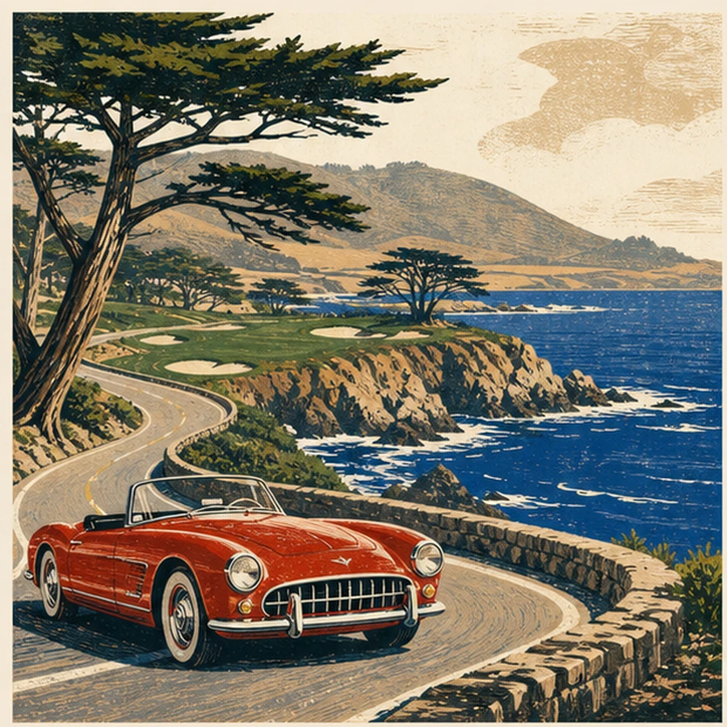

A plan, not a pile
Each outing has a default sequence. Smart swaps exist; decision paralysis does not.

Drive 17-Mile Drive slowly enough to deserve it, then finish with the Spanish Bay bagpiper.
The map is schematic. Northern California remains annoyingly unwilling to fit a browser window.
Permanent once earned. Repeats are called having a life.
Six outings that fit inside a few hours. No hotel search, no annual leave, no excuse.
Each outing has a default sequence. Smart swaps exist; decision paralysis does not.
Official sources are linked because roads, permits, ferries, snow, fire, and human bureaucracy all move.
Tell Alfred when an outing is done. The stamp becomes permanent in the next edition.